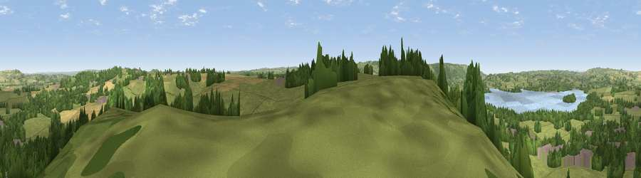

Viewpoint near Bishop Sutton
#14098 in England · top 24% of its area beats it · near Bishop SuttonThe view, rendered

A 360° render of this exact spot computed from the terrain model, tree cover and land cover — summer colours, afternoon light, calibrated against photographs of famous viewpoints. Real trees, hedges and buildings will differ in detail.
The panorama
Grey silhouette: terrain skyline in each direction (720 bearings, Earth curvature and refraction included). Dashed green: skyline with trees (+15 m) and buildings (+8 m) as obstacles. Blue strip: how far the ground is visible on each bearing.
Where the view opens
Wedge length = distance to the farthest visible ground on that bearing (vegetation-aware). Rings at 10, 25 and 50 km.
What fills the view
56% grassland · 26% woodland · 8% cropland · 6% water · 4% built-up
Angular shares of the visible panorama (visual magnitude), not map area. Landscape diversity 0.51 (0–1 Shannon).
Key numbers
More beautiful places nearby
The staircase of upgrades: each row has a higher view potential than everything closer. Driving times are estimates from straight-line distance, calibrated against real road routing — check an actual route before setting out.
| Place | Direction | Drive | Score |
|---|---|---|---|
| Viewpoint near Clutton | ENE · 2 km | ~6 min | 61.6 |
| Viewpoint near Chelwood | ENE · 5 km | ~10 min | 63.5 |
| Viewpoint near Chelwood | ENE · 5 km | ~11 min | 70.6 |
| Viewpoint near Ubley | WSW · 6 km | ~13 min | 71.3 |
| Viewpoint near Ubley | W · 7 km | ~15 min | 72.2 |
| Viewpoint near Norton Malreward | N · 8 km | ~16 min | 72.9 |
| Viewpoint near Charterhouse | WSW · 9 km | ~18 min | 74.0 |
| Beacon Batch | W · 11 km | ~20 min | 79.4 |
51.32793, -2.59162 · source: screening · position refined by local search. Computed location — check access rights before visiting.